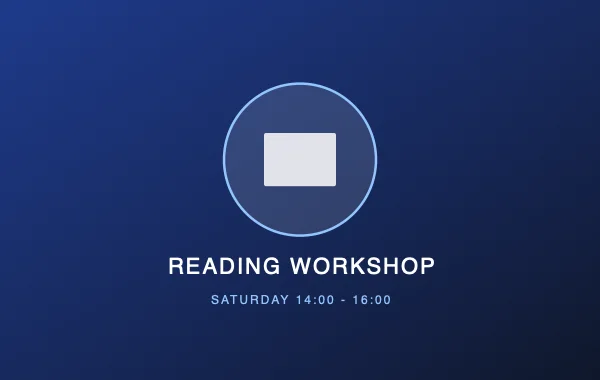
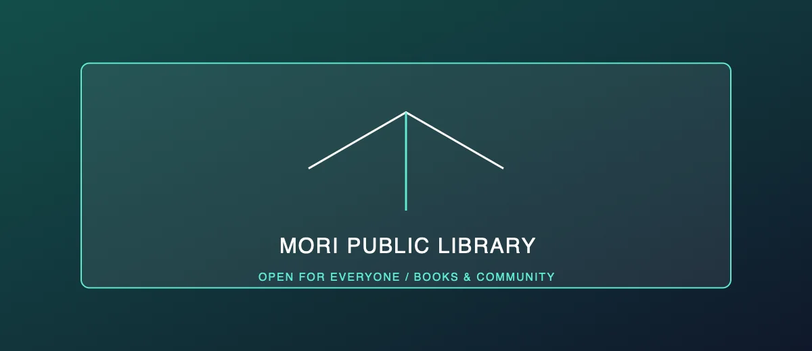
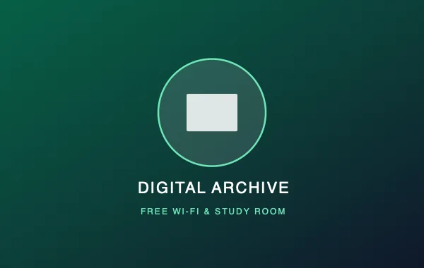

Welcome to Mori Library
だれでも心地よく過ごせる、ひらかれた図書館へ。
本を読む人、調べものをする人、休日に立ち寄る人。すべての利用者が安心して使える空間と情報をお届けします。
Events & Notice
今月のお知らせ・イベント
【重要】休館日のお知らせ：11月25日（水）は館内点検のため終日休館します。

Faq
よくある質問
車椅子やベビーカーでの入館はできますか？
はい、全館バリアフリー設計となっており、エレベーターと多目的トイレをご利用いただけます。
大きな文字の本や音声図書は借りられますか？
はい、1階カウンターにて大活字本・点字図書・デイジー（録音図書）の貸出を行っております。
Contact
お問い合わせ・イベント予約
Access
交通アクセス
名駅3丁目バス停より徒歩3分。正面玄関にスロープがございます。